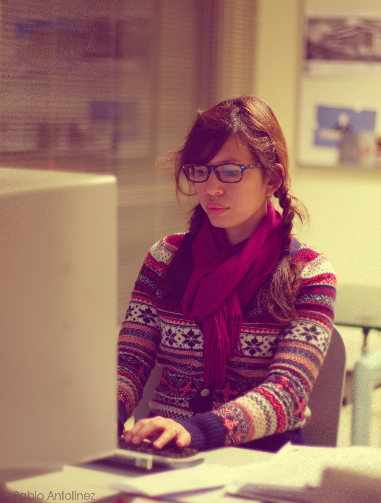

About
Where architecture, art, and education meet.

Hi! I'm Femmy Priscillya, an architectural designer, illustrator, instructional and visual designer, and creative workshop facilitator based in France, just a few steps from Geneva.
Architect by training and designer by practice, I specialise in turning complex ideas into clear, engaging visuals and learning experiences. After six years working in Singapore and Malaysia on sustainable architecture, including projects with DCA Architects and T.R. Hamzah & Yeang, I chose to expand my practice into art, design, and education.
My background spans architectural visualisation, brand identity, and illustration, with a focus on human-centred design. Today, my work explores the dialogue between art, design, and education, inviting children to experiment, imagine, and create.
Through My Little Studio, I develop and facilitate creative workshops where creativity, curiosity, and playful learning come together. Helping children express ideas and stories through drawing and design thinking has also strengthened my skills in learning design, facilitation, and the creation of visual supports that make learning concrete and motivating.
I am currently pursuing the Master of Science in Learning and Teaching Technologies (MALTT) at the University of Geneva, where I explore how design, technology, and pedagogy can create meaningful, playful, and effective learning experiences, especially in microlearning and visual storytelling.
Inspired by my children and the landscapes of the Jura and Alps, I continue to weave architecture, art, and education into experiences that nurture imagination, critical thinking, and a love for the environment.